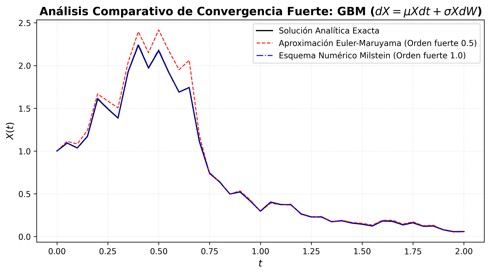

3 Soluciones Numéricas de Ecuaciones Diferenciales Estocásticas
En la práctica, la gran mayoría de las ecuaciones diferenciales estocásticas carecen de una solución analítica explícita debido a la no linealidad de sus coeficientes o al acoplamiento de sus perturbaciones. Por este motivo, resulta necesario recurrir a esquemas de aproximación numérica distribuidos en un mallado temporal discreto. A diferencia del cálculo determinista, donde la convergencia se evalúa de forma puntual, en el ámbito estocástico la cercanía entre la solución real \(X(t)\) y la aproximación discreta \(Y_n\) requiere criterios fundamentados en la teoría de la medida.
Para definir los criterios de convergencia, consideremos una partición regular del intervalo de tiempo \([0, T]\) con un tamaño de paso constante \(\Delta t = \frac{T}{N}\), fijando los nodos temporales como \(t_n = n \Delta t\) para cada paso \(n = 0, 1, \dots, N\). Denotaremos a la solución aproximada en el nodo \(t_n\) como \(Y_n = Y(t_n)\).
Definición 3.1 (Convergencia Fuerte) Se dice que una aproximación discreta \(Y\) converge fuertemente de orden \(\gamma > 0\) hacia la solución real \(X(T)\) en el tiempo terminal \(T\) si existe una constante positiva \(C\), independiente de \(\Delta t\), tal que se cumple la desigualdad:
\[ \mathbb{E}\left[|X(T) - Y_N|\right] \le C (\Delta t)^\gamma \]
La convergencia fuerte evalúa el error promedio directo sobre cada trayectoria individual del proceso. Es el criterio adecuado cuando interesa simular caminos muestrales específicos del sistema.
Definición 3.2 (Convergencia Débil) Se dice que una aproximación discreta \(Y\) converge débilmente de orden \(\beta > 0\) hacia la solución real \(X(T)\) en el tiempo terminal \(T\) si, para toda función de prueba \(g: \mathbb{R} \to \mathbb{R}\) continuamente diferenciable de crecimiento polinomial, existe una constante positiva \(C\) tal que:
\[ |\mathbb{E}[g(X(T))] - \mathbb{E}[g(Y_N)]| \le C (\Delta t)^\beta \]
La convergencia débil no compara trayectoria por trayectoria, sino que evalúa la aproximación de la distribución de probabilidad global y sus momentos estadísticos (como la media y la varianza), para más detalles consultar a (Kloeden y Platen 1992).
3.0.1 Esquema Numérico de Euler-Maruyama
El método de Euler-Maruyama constituye la extensión estocástica más elemental del método de Euler para ecuaciones diferenciales ordinarias. Este esquema aproxima el cambio continuo truncando las integrales de la ecuación mediante aproximaciones de orden inferior.
Teorema 3.1 (Teorema de Convergencia de Euler-Maruyama) Sea \(\{X(t)\}_{t \ge 0}\), considere la EDE dada por la Ecuación 4.1, con condición inicial \(X(0) = x_0\), si se cumplen las hipotesis del teorema de existencia y unicidad Teorema 4.1 y los coeficientes \(b\) y de difusión \(\sigma\) son continuamente diferenciables, entonces el esquema de Euler-Maruyama converge fuertemente con orden:
\[ \gamma = 0.5 \]
y converge débilmente con un orden de acotación de \(\beta = 1.0\).
Este orden de convergencia se fundamenta en que el incremento del movimiento Browniano domina algebraicamente sobre el incremento del tiempo determinista, dado que su escala de variación es proporcional a \(\sqrt{\Delta t}\), la demostración de este teorema se encuentra en (Kloeden y Platen 1992).
Algoritmo General de Euler-Maruyama
Para aproximar numéricamente las trayectorias de la ecuación en el intervalo \([0, T]\) con condición inicial \(X(0) = x_0\):
- Inicialización:
- Fijar el número de pasos \(N\) y calcular el incremento \(\Delta t = T/N\).
- Construir la malla temporal \(t_n = n \Delta t\) para \(n = 0, 1, \dots, N\).
- Asignar el valor inicial a la primera posición del vector: \(Y_0 = x_0\).
- Bucle de Simulación: Para cada paso temporal \(n = 0, 1, \dots, N-1\):
- Generar una variable aleatoria normal estándar independiente: \(Z_n \sim \mathcal{N}(0, 1)\).
- Calcular el incremento del proceso de Wiener mediante el escalamiento: \[\Delta W_n = W(t_{n+1}) - W(t_n) = Z_n \sqrt{\Delta t}\]
- Actualizar el estado del proceso en el siguiente nodo evaluando la relación recursiva: \[Y_{n+1} = Y_n + b(t_n, Y_n) \Delta t + \sigma(t_n, Y_n) \Delta W_n\]
- Resultado: El vector de estados discreto \(\{Y_0, Y_1, \dots, Y_N\}\) representa la trayectoria simulada aproximada del proceso.
3.0.2 Esquema Numérico de Milstein
El método de Milstein es un esquema numérico avanzado de orden superior que corrige la aproximación de la componente difusiva. Surge de aplicar de manera explícita el Lema de Itô al integrando de la componente estocástica en la expansión de Taylor-Itô, rescatando los términos de segundo orden que el método de Euler-Maruyama ignora.
Teorema 3.2 (Teorema de Convergencia de Milstein) Sea \(\{X(t)\}_{t \ge 0}\), considere la EDE dada por la Ecuación 4.1 sujeta a las condiciones estándar de regularidad, es decir si los coeficientes \(b(t, x)\) y \(\sigma(t, x)\) son dos veces continuamente diferenciables respecto a sus componentes y cumplen los criterios de crecimiento acotado, entonces el esquema numérico de Milstein converge fuertemente con un orden superior dado por:
\[ \gamma = 1.0 \]
El incremento en la velocidad de convergencia fuerte se logra al incorporar de forma analítica el término correspondiente a la integral estocástica iterada
\[ \int_{t_n}^{t_{n+1}} \int_{t_n}^s dW(u) dW(s) = \frac{1}{2} \left[ (\Delta W_n)^2 - \Delta t \right], \]
la cual modela la curvatura interna del ruido estocástico dentro del intervalo de simulación, lo que permite una aproximación más precisa de la trayectoria. La demostración de este resultado se encuentra en (Kloeden y Platen 1992).
Algoritmo General de Milstein
Para aproximar numéricamente las trayectorias bajo el refinamiento de segundo orden estocástico en el intervalo \([0, T]\) con condición inicial \(X(0) = x_0\):
- Inicialización:
- Establecer el número de intervalos \(N\) y calcular el paso \(\Delta t = T/N\).
- Definir los puntos de la malla \(t_n = n \Delta t\) para \(n = 0, 1, \dots, N\).
- Asignar la condición de inicio del proceso: \(Y_0 = x_0\).
- Bucle de Simulación: Para cada paso temporal \(n = 0, 1, \dots, N-1\):
- Obtener una realización independiente de una variable normal estándar: \(Z_n \sim \mathcal{N}(0, 1)\).
- Establecer el incremento browniano escalar correspondientemente: \(\Delta W_n = Z_n \sqrt{\Delta t}\).
- Calcular analíticamente el valor de la primera derivada parcial del coeficiente de difusión respecto a la variable espacial evaluado en el punto actual: \[\sigma'(t_n, Y_n) = \frac{\partial \sigma(t, x)}{\partial x} \bigg|_{(t_n, Y_n)}\]
- Realizar la actualización recursiva del estado integrando la corrección de segundo orden: \[Y_{n+1} = Y_n + b(t_n, Y_n)\Delta t + \sigma(t_n, Y_n)\Delta W_n + \frac{1}{2}\sigma(t_n, Y_n)\sigma'(t_n, Y_n)\left[(\Delta W_n)^2 - \Delta t\right]\]
- Resultado: El conjunto ordenado de aproximaciones numéricas \(\{Y_0, Y_1, \dots, Y_N\}\) conforma la trayectoria analizada bajo estabilidad de orden superior.
3.1 Análisis Comparativo de Convergencia Fuerte
Para mostrar la diferencia analítica que hay entre los esquemas de Euler-Maruyama y Milstein, y justificar la necesidad de utilizar este último cuando se requiere precisión en trayectorias individuales, planteamos un problema de control numérico. Consideremos el Movimiento Browniano Geométrico (GBM), una EDE lineal homogénea caracterizada por un coeficiente de difusión multiplicativo, dada por la ecuación:
\[ dX(t) = \mu X(t) dt + \sigma X(t) dW(t) \tag{3.1}\]
con condición inicial \(X(0) = X_0\), tendencia determinista \(\mu > 0\) y volatilidad \(\sigma > 0\). Este proceso posee una solución analítica única dada por:
\[ X(t) = X_0 \exp\left[\left(\mu - \frac{1}{2}\sigma^2\right)t + \sigma W(t)\right] \]
Esta forma cerrada nos permite contrastar directamente las aproximaciones numéricas contra la realidad del proceso. La principal limitación del método de Euler-Maruyama radica en su coeficiente de difusión constante en cada paso temporal. Al truncar la integral estocástica con un orden de convergencia fuerte de 0.5, el esquema no absorbe correctamente la curvatura del ruido multiplicativo (\(\sigma X_t\)), acumulando errores significativos sobre las trayectorias individuales, incluso ante mallados temporales relativamente pequeños. Por el contrario, el método de Milstein integra el término de segundo orden estocástico, logrando que el vector de estados discreto coincida con mayor precisión con la dinámica real del proceso (Kloeden y Platen 1992).
En la Figura 3.1, simulamos una trayectoria de GBM en un horizonte temporal acotado (\(T=2.0\) años) con una volatilidad alta (\(\sigma = 1\)) y un tamaño de paso discreto relativamente grueso (\(\Delta t = 0.05\), correspondiente a \(N=40\) pasos). Esta configuración es deliberada para resaltar las fallas de los aproximadores.

Como se puede apreciar en la Figura 3.1, la trayectoria roja que correspondiente al método de Euler-Maruyama falla en aproximar la dinámica exacta (línea negra), presentando oscilaciones exageradas y alejándose del valor real a medida que el tiempo avanza. Por otro lado, la trayectoria azul del método de Milstein sigue prácticamente de forma idéntica la trayectoria real. Esta diferencia justifica nuestra decisión de utilizar el esquema numérico de Milstein para simular el comportamiento térmico del refrigerador HBC-150, ya que el modelo híbrido presenta un coeficiente de ruido continuo \(\sigma(\alpha(t))\), lo cual genera perturbaciones multiplicativas que requieren un orden de convergencia estricto para no subestimar el riesgo de trayectorias erráticas.